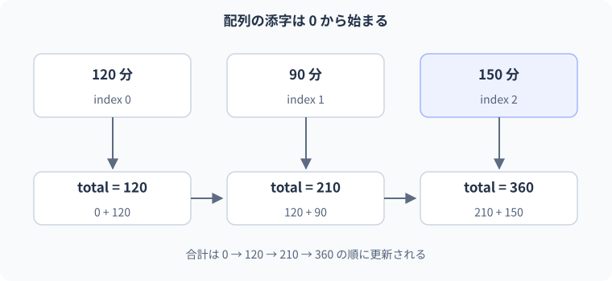

06 配列と繰り返し — 詳細解説
配列の要素と合計の更新。
図解：配列の要素と合計の更新

配列の要素・添字・長さ
配列は要素を順序付きでまとめる型です。要素とは配列に入っている一つの値です。毎日の学習時間をday1、day2、day3という別の変数へ入れると、日数が増えるたびに変数と計算を追加する必要があります。配列なら一つの名前から各要素へアクセスし、同じ処理を繰り返せます。
インデックスは要素の位置を示す整数です。C#の通常の一元配列では先頭が0、最後がLength - 1です。Lengthは要素数なので、要素数そのものの位置は存在しません。3要素なら位置は0・1・2です。この「個数」と「最後の位置」の違いが範囲外アクセスを防ぐ基礎です。
配列の長さは生成後に変更できません。要素の値は代入で変更できます。配列変数へ別の配列を代入することもできますが、それは元の配列の長さを伸ばしたわけではありません。追加や削除を繰り返す場合に使うList<T>はLesson 15で扱います。
文法と最小例
int[] minutes = { 20, 35, 15 };
Console.WriteLine(minutes[0]);
minutes[1] = 40;
Console.WriteLine(minutes[1]);
Console.WriteLine(minutes.Length);期待出力は20、40、3です。int[]はintの配列型、{20,35,15}は初期値の並び、minutes[1]は二番目の要素です。配列の名前自体と、要素へのアクセスを区別します。
| 順序 | 操作 | 配列の状態 | 表示 |
|---|---|---|---|
| ① | 初期化 | [20, 35, 15] | なし |
| ② | 位置0を読む | [20, 35, 15] | 20 |
| ③ | 位置1へ40を代入 | [20, 40, 15] | なし |
| ④ | 位置1を読む | [20, 40, 15] | 40 |
| ⑤ | Lengthを読む | 要素数は3のまま | 3 |
配列は参照型であり、変数は配列の実体への参照を保持します。参照とは実体をたどるための値です。いまは「要素の変更」と「別の配列への差し替え」が異なる、と把握してください。コピー時の共有はLesson 13で詳しく確認します。
forを四つの仕事に分解する
int[] minutes = { 20, 35, 15 };
int total = 0;
for (int i = 0; i < minutes.Length; i++)
{
total += minutes[i];
Console.WriteLine($"i={i}, total={total}");
}
Console.WriteLine($"合計={total}");期待される出力：
i=0, total=20
i=1, total=55
i=2, total=70
合計=70for (初期化; 条件; 更新)の初期化は最初に一度だけ行います。条件を検査してtrueなら本体、続いて更新、再び条件という順です。i++はiへ1を加える処理です。total += minutes[i]はこの例では現在のtotalと要素を加え、totalへ戻す意味です。
- 1初期化
i=0、total=0
- 2条件
i < Length ?
- 3本体
totalへminutes[i]を加える
- 4更新
iを1増やす
- 5条件へ戻る
falseになればループの外へ
| 条件検査の時点 | 条件 | 加える値 | 本体後のtotal | 更新後のi |
|---|---|---|---|---|
| i=0 | 0 < 3、true | 20 | 20 | 1 |
| i=1 | 1 < 3、true | 35 | 55 | 2 |
| i=2 | 2 < 3、true | 15 | 70 | 3 |
| i=3 | 3 < 3、false | 読まない | 70 | 更新しない |
最後の条件はfalseなのでminutes[3]にはアクセスしません。条件が境界を守っています。最初から空の配列ならLengthが0なので、本体は一度も実行されずtotalは0です。0件の扱いも自然に設計できています。
foreach・while・doの選択
int[] minutes = { 20, 35, 15 };
int total = 0;
foreach (int value in minutes)
{
total += value;
}
Console.WriteLine(total);期待出力は70です。foreachは対象から順に要素を受け取ります。valueはその回の要素を読むための変数です。位置番号が不要なら、配列範囲の管理を自分で書かずに済みます。一般の列挙可能な対象では「次の要素を求める」仕組みを利用しますが、配列ではコンパイラーが効率的な形へ変換する場合もあります。必ず列挙子オブジェクトが生成されるとは断定しません。
| 構文 | 選ぶ場面 | 主に管理するもの |
|---|---|---|
| for | 位置を使う、飛ばしながら処理する | 初期値・条件・更新 |
| foreach | 全要素を順に読む | 要素に対する処理 |
| while | 回数より終了条件が中心 | 条件と状態更新 |
| do/while | 必ず一度は行ってから続行を判断 | 初回処理と条件 |
whileは条件がfalseなら一度も本体を実行しません。do/whileは本体の後で条件を検査するため、最低一回実行します。入力し直しを促す場合など、最初に必ず行いたい処理かどうかで選びます。
実用例：条件に合う日だけ集計する
int[] minutes = { 20, 0, 45, 10, 30 };
int activeDays = 0;
int total = 0;
foreach (int value in minutes)
{
if (value == 0)
{
continue;
}
activeDays++;
total += value;
}
Console.WriteLine($"学習日={activeDays}");
Console.WriteLine($"合計={total}");期待出力は学習日=4、合計=105です。continueはその回の残りを飛ばして次の繰り返しへ進みます。ループ全体を終わるbreakとは違います。0分の日は件数にも合計にも加えません。20の後は日数1・合計20、0の後も同じ、45の後は2・65、10の後は3・75、30の後は4・105です。
業務では「複数データを確認し、条件に合うものを集計する」処理が頻繁に現れます。後でLINQを使うと短く表現できますが、このループを読めないまま式だけ覚えると、件数と合計の違いや除外条件を見失います。まず状態を一回ずつ追います。
間違い：Lengthを最後の位置だと思う
int[] values = { 10, 20, 30 };
for (int i = 0; i <= values.Length; i++)
{
Console.WriteLine(values[i]);
}10・20・30を表示した後、i=3でも条件がtrueになり、存在しない位置3を読みます。通常の配列アクセスでIndexOutOfRangeExceptionが発生します。例外は実行中の異常を知らせる仕組みです。「最初の三つは表示できた」ことから、SDKよりループ終端を疑います。
修正位置は条件の<=です。
int[] values = { 10, 20, 30 };
for (int i = 0; i < values.Length; i++)
{
Console.WriteLine(values[i]);
}修正後は10・20・30だけを表示します。別解はforeachです。手で固定値2まで回す修正は、要素数が変わると壊れるため、Lengthとの関係で条件を表します。0件・1件・複数件の入力で確認すると境界のミスを見つけやすくなります。
間違い：continueで更新を飛ばす
int i = 0;
while (i < 3)
{
if (i == 1) continue;
Console.WriteLine(i);
i++;
}0を表示してi=1になった後、continueがi++を飛ばします。次回もi=1なので同じ状態から抜けられず、無限ループになります。この例は停止しなくなるため、そのままの実行を課題にしません。既に動かした場合はターミナルでCtrl+Cなどを使って中断します。
修正位置は更新の管理です。
for (int i = 0; i < 3; i++)
{
if (i == 1) continue;
Console.WriteLine(i);
}期待出力は0、次の行に2です。forのcontinueは更新処理を経て次の条件検査へ進むため、iは増えます。防止するには、各経路で終了へ近づく状態変化があるかを調べます。whileで書く別解なら、continueする経路にも更新を入れる必要があります。
段階別の練習
基礎課題は配列{2,4,6}の合計をforとforeachで求めることです。期待出力は12です。二つのコードが同じ結果でも、forは位置を管理しforeachは要素を直接読むという違いを説明します。
標準課題は{40,80,60,90}から60以上の件数と合計を求めることです。期待は件数3、合計230です。合計用変数と件数用変数を分け、条件に合ったときだけ両方を更新します。すべてを加えてから不合格を引く別解より、条件に一致した要素を加える方が追跡しやすくなります。
int[] scores = { 40, 80, 60, 90 };
int count = 0;
int total = 0;
foreach (int score in scores)
{
if (score >= 60)
{
count++;
total += score;
}
}
Console.WriteLine($"件数={count}, 合計={total}");応用課題は、最初の60以上の点を見つけたら探索を終えることです。入力が{40,80,60,90}なら80、{10,20}なら「見つかりません」です。見つかったかをbool foundで保持するか、見つかった位置を-1で初期化する方法があります。最初に見つけた後でbreakしないと、最後の一致へ変わってしまうので要件と停止条件を照合します。
境界・比較例：添字が必要なループ
画面表示の番号だけi + 1にします。配列の参照はtasks[i]のままであり、i <= tasks.Lengthにはしません。
string[] tasks = { "設計", "実装", "テスト" };
for (int i = 0; i < tasks.Length; i++)
Console.WriteLine($"{i + 1}. {tasks[i]}");想定出力
1. 設計
2. 実装
3. テスト公式資料
確認日：2026年9月14日。本文の理解を補うための資料です。学習対象は.NET 10 / C# 14です。パッチ番号は固定しません。